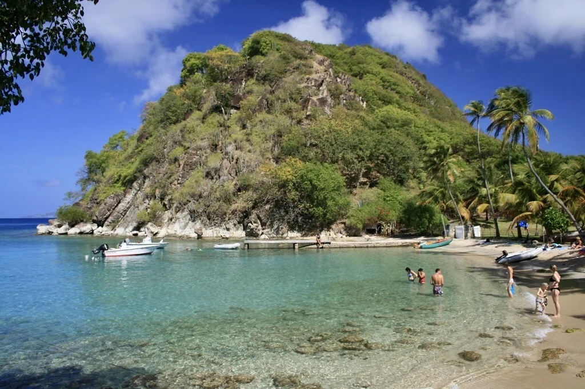

Pain de Sucre — Terre-de-Haut (Les Saintes)
Terre-de-Haut, Les Saintes, Guadeloupe · snorkeling, baignade

Petite crique de sable au pied de la colline volcanique du Pain de Sucre, à Terre-de-Haut. Le Comité du tourisme des Îles de Guadeloupe parle d’eaux cristallines et de cocotiers, et range le snorkeling ici parmi les meilleurs des Saintes : poissons tropicaux, coraux et étoiles de mer. On y va à pied en 30 à 45 minutes depuis le bourg, ou en excursion en bateau. Décembre et janvier tombent dans la saison sèche (de décembre à mai), avec une mer à 27 °C.
- Lieu
- Terre-de-Haut, Les Saintes, Guadeloupe
- Niveau
- Variable selon les conditions
- Activités
- snorkeling, baignade
- Type d'eau
- Mer / océan
- Coordonnées
- 15.86, -61.60 (position approximative du secteur)
Dangers à connaître
- Plage non surveillée : sois prudent, surtout avec de jeunes enfants ou si tu t’éloignes du bord.
- La fin du chemin est une descente caillouteuse : mets des chaussures fermées.
- Observe coraux et poissons sans les toucher, avec une crème solaire respectueuse des récifs.
- Des sargasses s’échouent par moments en Guadeloupe : en mai 2026, la préfecture a lancé une veille sanitaire, avec une pré-alerte à Grande-Anse, sur Terre-de-Bas. Renseigne-toi avant de partir.
Le conseil d'Ocean Buddy
Mets des chaussures fermées pour la descente caillouteuse, reste près du bord avec des enfants et observe coraux et poissons sans les toucher.
Ouvrir dans Ocean Buddy Télécharger sur l'App Store
Source : Fiche Ocean Buddy · décembre 2026 · d’après le Comité du tourisme des Îles de Guadeloupe et L’Info Durable · à vérifier localement.